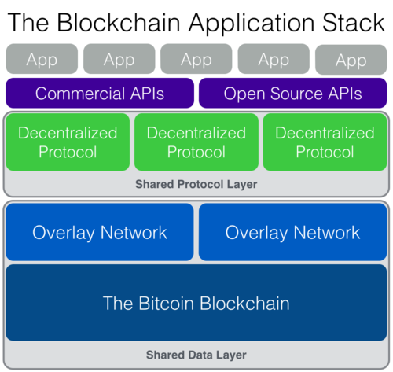
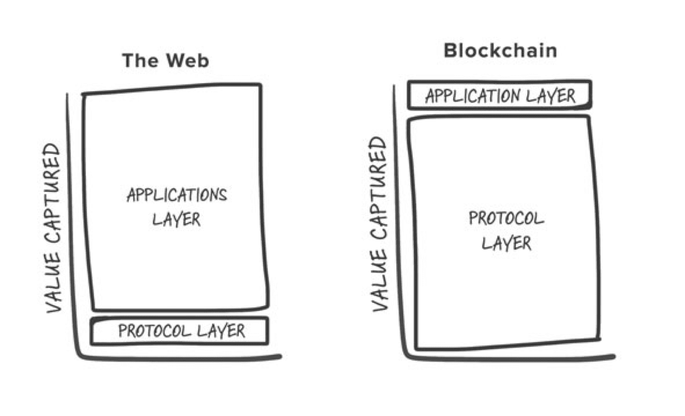
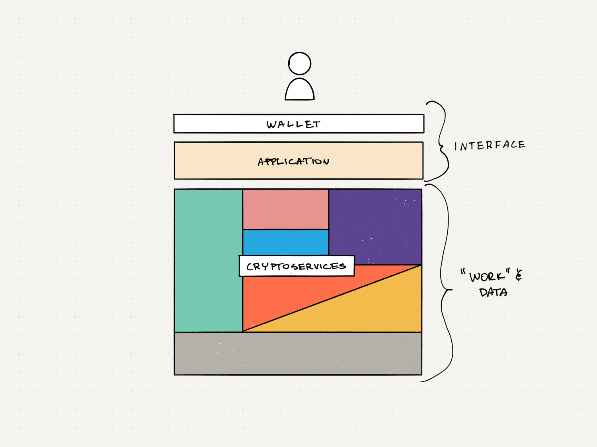

This is an update to The Blockchain Application Stack (2014) and Fat Protocols (2016).
When I started thinking about the architecture of blockchain applications back in 2014, I described it as a hierarchical “stack” of functionality. That first iteration described a blockchain at the base with “overlay networks” that provide specific decentralized services on top, forming “shared” protocol and data layers. Above them, independent applications would consume those protocols and redistribute their services to users:

I predicted this architecture would dominate new online services within a decade as crypto took over the web. So it’s been fun to review how things have developed five years into that idea. The most obvious flaw was thinking we’d build everything on top of Bitcoin (Ethereum hadn’t launched). Now we have a multitude of blockchains to choose from, which is much better. We also refer to “overlay networks” as layer 2. And today, the “Web3 Application Stack” would be a better name. But the overall framework appears to stand.
Two years into it, this model took me to the highly debated idea of “fat protocols”. I suggested most of the market value in crypto would be captured at the “protocol layer” whereas on the web it’s captured at the “application layer”.

This observation evolved from the application stack. Most of the “work” and data exists at the protocol layer, while applications tend to provide more limited interface services. In 2014, “business models” at the protocol layer were not obvious. But as we invested in early crypto at USV, the potential of tokens became more clear.
In 2014 and 2016, there weren’t a lot of real-world examples to observe. And it’s still “early days” in the grand scheme of the history of IT. But now we can observe hundreds of crypto protocols and applications across many markets. Going into 2020, and after testing different aspects of these ideas at Placeholder, it’s a good time to refine old ideas and consolidate what we’ve learned so far.
A Cryptoservices Architecture
Big Web companies tend to expand their platforms and monopolize information by locking users into proprietary interfaces. Cryptonetworks, on the other hand, tend to provide single services, and can’t “own” the interface because they don’t control the data. Specialization helps because the more decentralized a network, the harder it is to coordinate a complete suite of services under a single interface like Google, Facebook, or Amazon do. So instead, consumer applications in crypto/Web3 are independently built on top of multiple “composable” protocols using what we could call a cryptoservices architecture (like microservices, but with sovereign components).

In Decentralized Finance (DeFi) people call this “money legos”. Consider Zerion (a Placeholder investment), Instadapp and Multis. They are building similar crypto-finance apps using many of the same protocols, like Ethereum, Compound, Maker, and Uniswap. This allows them to deliver a complete suite of financial services (transactions, borrowing, lending, trading, investing, etc.) without building all that functionality, infrastructure and liquidity in-house. The protocols provide specific services across many interfaces and the apps on top share resources and data with no centralized platform risk. Sharing the infrastructure lowers the costs across the board. These same dynamics are showing up in corners of crypto like DAOs and games.
A cryptoservices architecture is great for startups. Entrepreneurs can launch new applications quickly and cheaply by outsourcing a lot of the functionality to various networks. And every app is on equal footing when it comes to protocol costs and resources (unlike web infrastructure like AWS where the smaller you are, the more expensive it is). The companies above stand out because they brought fully-featured products to the market before their first real rounds of funding. They’re a first look at the level of capital efficiency that’s possible for “thin” applications using this new model, compared to the increasing amount of capital web companies need to raise to compete with incumbents.
Bring Your Own Data
Non-custody is another way crypto cuts costs for applications. The Big Web business model relies on creating data monopolies because locking users into proprietary interfaces is the most profitable way to extract value from their information. They also compete more than they collaborate, so as a user you have to visit different platforms for slices of your information. And the increasing costs of security and new regulation turns data into a liability. This works to the advantage of companies that can afford these costs. But resource-constrained startups have to look for other models to compete.
As a crypto user, you bring your own data. Nobody has monopoly control. When you log into a crypto app by connecting your wallet, you’re sharing the “keys” it needs to find your information across the relevant networks. You can share them with any app, so your data comes with you as you move from interface to interface. And you keep control of the “private key” (basically a password) needed to operate on it, like signing messages or authorizing transactions. So you have effective custody over your data and nobody can manipulate it without consent (unless you delegated your keys to a custodian).
For example, in the crypto-collectibles world, an artist can tokenize their work using Rare Art and later sell it on OpenSea. Then someone (like Jake) can buy and display it at their virtual gallery on Cryptovoxels. Similarly in DeFi, if you use Maker through Zerion and later log into Instadapp with the same keys, you can immediately interact with your Maker loan there as well. By building on the same standards and networks, these apps are interoperable by default and users can move freely between interfaces without losing information or functionality.
A cryptoservices architecture combined with a non-custodial data model allows startups to compete more effectively against centralized incumbents. This echoes the way open standards drive IT market cycles. Giving ownership and control to the users offloads a lot of costs while fulfilling many of today’s consumer demands. It does require companies to give up a lot of what makes traditional online services defensible. But what you lose in control, you gain in potential efficiency and scale. Adopting these models allows businesses to run at very low costs, and applications benefit from each other’s success because they contribute to a shared pool of resources at the protocol level. As a network, thin applications can scale more effectively across markets. Every piece of digital art minted on Rare Art indirectly increases the utility value of OpenSea, activity on Instadapp benefits Zerion (and vice versa), etc. But what seems unclear to many is how exactly they can create long-term business value and defensibility when everything is open.
Value Capture vs. Investment Returns
Fat Protocols suggests crypto protocols will “capture” more value than the application interfaces. A common mistake is to conflate the idea of value capture with investment returns (it’s also a mistake to think that a token on Ethereum or another smart contract blockchain is itself an “application” – more often than not, they represent the value other protocols with their own application layers, not Ethereum’s application interfaces). Many concluded there are no returns in investing at the application layer of crypto despite the original text qualifying application-layer success as a requirement for protocol value growth. To be clear, that less overall value ends up at the application layer does not mean there are fewer outsized return opportunities available to application businesses. Nor does it mean there’s always returns in protocols. Value capture is more about TAM and other macro elements, while returns vary by things like cost basis, growth rates, and ownership concentration. What’s different between protocols and applications is how these elements combine.
Looking at value through the lens of costs is a more precise way to think about value distribution. The basic principle is that, in markets, costs are a strong determinant of future value. So we can estimate a market’s value structure by studying its cost structure. In crypto, the networks at the protocol layer bear most of the costs of production so they require more investment – which means more of the value has to accrue to that layer to maintain equilibrium (or the investment doesn’t happen). Applications cost less to operate and require less investment, so they naturally demand less of the market’s value. However, the ownership and cost structures of networks are far more distributed than those of private companies. In general, investing in tokens will generally get you a smaller piece of what has to be a much bigger pie to cover your cost of capital.
For example, buying $10 million worth of ETH at ~$15 billion network value will get you just about 0.06% of the network (based on current supply), and to provide a 5x return (to $50 million) Ethereum needs to add $60 billion dollars to its market cap. Meanwhile, a $1 million seed investment in a successful application business for 10% of the company will yield the same $50 million with “just” another $490 million in value – and probably for less than $10 million when you account for follow-ons.
But networks and companies process value in very different ways. The forces that take a public network from $20 to $90 billion in value are very different from those which take a business from $10 to $500 million. Token prices are chaotically determined every time there is a trade in the public markets, where networks gain and lose more value per investment dollar faster than private companies can. The complexity adds a lot of leverage to every investment dollar flowing in and out. Meanwhile, business value may be a well-known function, but private, early-stage investments can be riskier in unpredictable ways.
Finally, we must also consider the combined value of all protocols underneath an application to assess relative values. For example, Zerion relies on Ethereum, Maker, Compound, Uniswap and others to operate. The combined value of these networks is far greater than the individual value of Zerion or its peers. But again, that has little to do with investment returns in the apps and companies that use these protocols. Cryptonetworks may scale to store trillions in value but, eventually, flatten in growth. Then, most of the market’s value may be stored in the protocol layer, while outsized returns on investment move to wherever there is more growth. But today we’re far from that state of equilibrium and we’re finding high-return opportunities in both layers.
P2B2C
Thin Applications are cheaper to run because they push many of the costs to protocols and users. But competitors can access the same production and data resources, so they can substitute each other in ways that are impossible on the traditional web. In a way, it’s similar to the retail model where storefronts act as “interfaces” to various commodity products and differentiate themselves by brand, curation and customer experience. But instead of “B2B2C” think of crypto as P2B2C for Protocol to Business to Consumer.
Protocols provide specific services, which are bundled at the application layer for distribution to consumers. Like in retail, prices are determined by the cryptonetworks which produce the services (a la MSRP), and fair competition at the application layer makes it difficult for anyone to mark them up unfairly. This setup is great for users and addresses many of our gripes with the web. But it raises new questions about defensibility at the application layer. How do you create long-term business value and defensibility when everything is open and competitors can so easily substitute each other?
In crypto, application businesses have to create value outside the protocols’ functions. In many cases, known business models like subscriptions or transaction fees make sense. But as the infrastructure matures and applications become thinner, we need new business models. There’s a lot of interesting experiments. Blockstack, for example, innovates with “app mining” and NEAR includes a royalty fee structure for its developers (both evoking Amy James’ salutary protocols idea). I’m curious to see how they develop, though I am not yet convinced that protocols should dictate the economics of its applications. Covering the full range of experiments would take many more paragraphs so, here, I’ll focus on three general strategies: building cost moats, vertical integration, and user-staker models.
Building a cost moat means centralizing costs and externalities unaccounted for by the protocols. The scale of these costs is a kind of defensibility because it makes it very expensive for competitors to catch up. Coinbase, for example, created a lot of business value by capturing two very expensive externalities of crypto that users are willing to outsource, fiat exchange and custody, and profit via classic economies of scale. Nothing too new. The market won’t let Coinbase mark up crypto transaction fees, but they’ll get you with the exchange fees to cover the substantial investment they’ve had to make to provide these services. Thinner applications like Zerion, by contrast, don’t internalize those costs so they charge no extra fees – but as a result, they can’t use Coinbase’s business models or justify the same fees. It works, but it’s expensive.
Vertical integration in crypto explores the possibility that successful applications may amass enough users to “become their own supply”. They could do this by turning themselves into “supply-siders” (e.g. miners) in the protocols they integrate and servicing their users directly. We saw this in the old retail model with store brands and it’s happening again as Amazon promotes its own products over the competition’s. Amazon grew by taking virtually no margins on the items sold on its storefront, to then leverage that platform and its perfect demand data to create its own supply with unprecedented efficiency. Could crypto applications pull off a similar move? What if the application later forks the network? Will the market allow that? It is undesirable for the application layer to capture too much control of the protocols. That’s what happened to the Web. But it’s a possible outcome.
Finally, the idea of user-staking is about leveraging tokens to distribute value and upside to users. In general, it works by having users stake an amount of the application’s own token (not a protocol’s) to unlock benefits like discounts or rewards – but there’s a lot of variations. At first glance, they look similar to the loyalty/reward systems used to retain customers in other hyper-commoditized markets like airlines and credit cards. Except those programs provide no upside at all. The innovation is in designing token models that allow users to profit from the application’s growth. It goes beyond marginal benefits like discounts by including users in the upside of the business.
For example, Nexo and Celsius, which offer crypto-collateralized loans, use tokens this way. Nexo offers discounted interest rates when you pay them back with NEXO tokens. At Celsius you unlock better rates the more CEL you stake and can earn better interest rates on your deposits if you opt to earn in CEL. Because NEXO and CEL tokens have a limited supply, they may appreciate in value as the usage of these applications grows and more people buy and use the tokens. So there’s value in the upside beyond a simple discount. We’re even seeing this model with SAAS companies like Blox, which give you a discount on monthly fees if you stake their token. How can we take this concept further into the mainstream?
I’m most fascinated by the user-staking models because they represent a genuine business model innovation. The examples above are built more like traditional web applications. They are more centralized and custodial than thinner apps like Zerion. But what I love about their staking models is how they change the user-service relationship. Web users are locked-in by force through the centralization of data. Crypto applications, even if they’re built more traditionally, don’t have that same ability to lock you in. But user-staking creates a kind of “opt-in” economic lock-in that benefits the user by turning them into stakeholders in the success of the service. It creates defensibility through user-ownership instead of user lock-in. This presents a universe of fascinating consequences, to be explored in future work.